31 | Java虚拟机的监控及诊断工具（GUI篇）
今天我们来继续了解 Java 虚拟机的监控及诊断工具。
eclipse MAT
在上一篇中，我介绍了jmap工具，它支持导出 Java 虚拟机堆的二进制快照。eclipse 的MAT 工具便是其中一个能够解析这类二进制快照的工具。
MAT 本身也能够获取堆的二进制快照。该功能将借助jps列出当前正在运行的 Java 进程，以供选择并获取快照。由于jps会将自己列入其中，因此你会在列表中发现一个已经结束运行的jps进程。
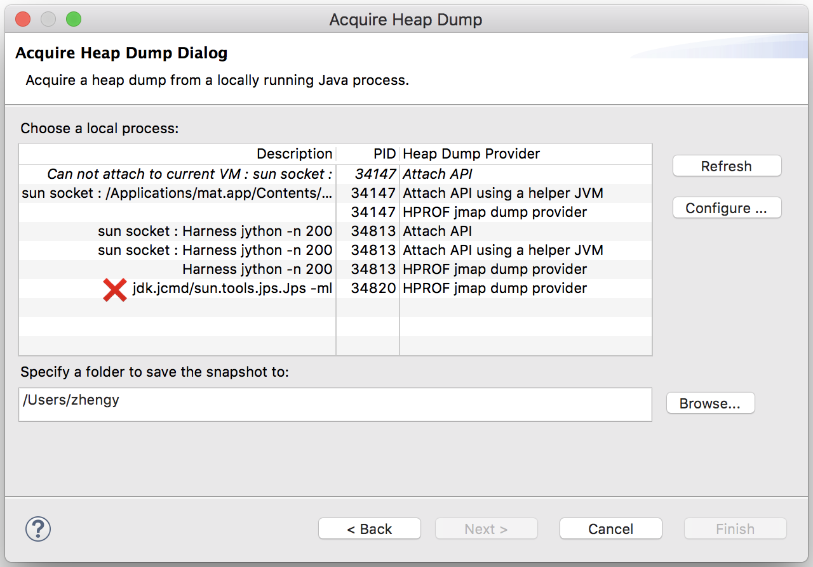
MAT 获取二进制快照的方式有三种，一是使用 Attach API，二是新建一个 Java 虚拟机来运行 Attach API，三是使用jmap工具。
这三种本质上都是在使用 Attach API。不过，在目标进程启用了DisableAttachMechanism参数时，前两者将不在选取列表中显示，后者将在运行时报错。
当加载完堆快照之后，MAT 的主界面将展示一张饼状图，其中列举占据的 Retained heap 最多的几个对象。
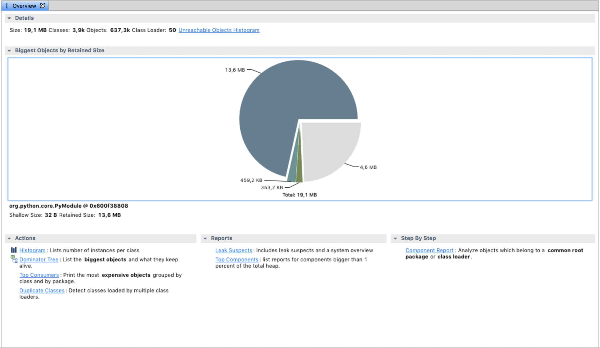
这里讲一下 MAT 计算对象占据内存的两种方式。第一种是 Shallow heap，指的是对象自身所占据的内存。第二种是 Retained heap，指的是当对象不再被引用时，垃圾回收器所能回收的总内存，包括对象自身所占据的内存，以及仅能够通过该对象引用到的其他对象所占据的内存。上面的饼状图便是基于 Retained heap 的。
MAT 包括了两个比较重要的视图，分别是直方图（histogram）和支配树（dominator tree）。
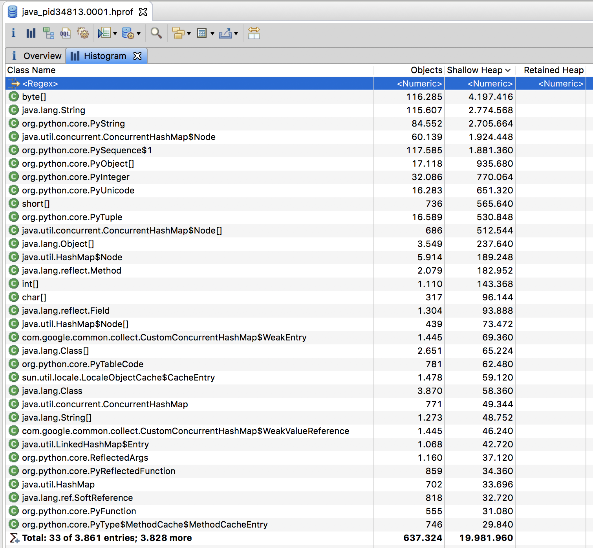
MAT 的直方图和jmap的-histo子命令一样，都能够展示各个类的实例数目以及这些实例的 Shallow heap 总和。但是，MAT 的直方图还能够计算 Retained heap，并支持基于实例数目或 Retained heap 的排序方式（默认为 Shallow heap）。此外，MAT 还可以将直方图中的类按照超类、类加载器或者包名分组。
当选中某个类时，MAT 界面左上角的 Inspector 窗口将展示该类的 Class 实例的相关信息，如类加载器等。（下图中的ClassLoader @ 0x0指的便是启动类加载器。）
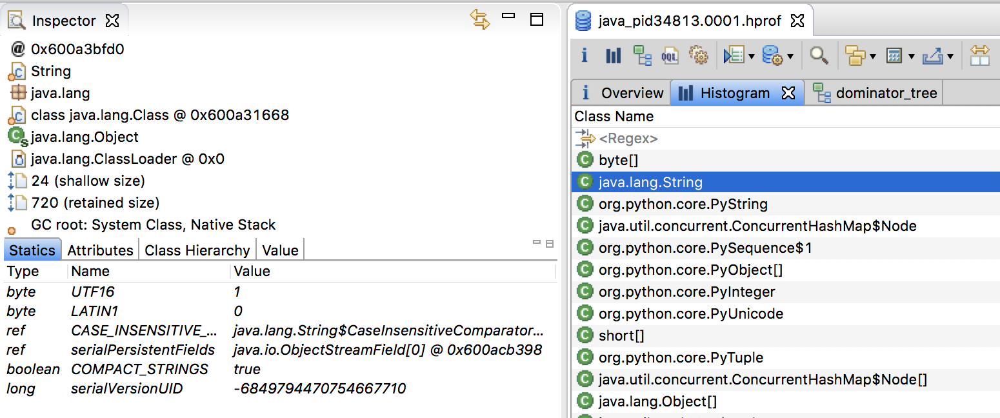
支配树的概念源自图论。在一则流图（flow diagram）中，如果从入口节点到 b 节点的所有路径都要经过 a 节点，那么 a 支配（dominate）b。
在 a 支配 b，且 a 不同于 b 的情况下（即 a 严格支配 b），如果从 a 节点到 b 节点的所有路径中不存在支配 b 的其他节点，那么 a 直接支配（immediate dominate）b。这里的支配树指的便是由节点的直接支配节点所组成的树状结构。
我们可以将堆中所有的对象看成一张对象图，每个对象是一个图节点，而 GC Roots 则是对象图的入口，对象之间的引用关系则构成了对象图中的有向边。这样一来，我们便能够构造出该对象图所对应的支配树。
MAT 将按照每个对象 Retained heap 的大小排列该支配树。如下图所示：
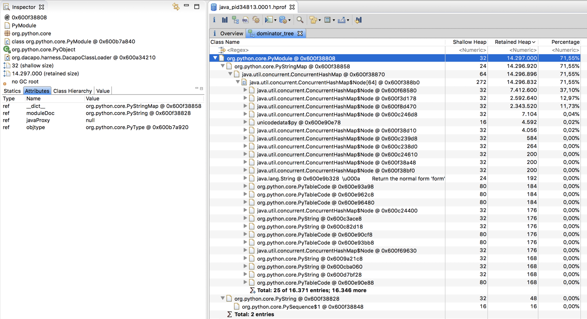
根据 Retained heap 的定义，只要能够回收上图右侧的表中的第一个对象，那么垃圾回收器便能够释放出 13.6MB 内存。
需要注意的是，对象的引用型字段未必对应支配树中的父子节点关系。假设对象 a 拥有两个引用型字段，分别指向 b 和 c。而 b 和 c 各自拥有一个引用型字段，但都指向 d。如果没有其他引用指向 b、c 或 d，那么 a 直接支配 b、c 和 d，而 b（或 c）和 d 之间不存在支配关系。
当在支配树视图中选中某一对象时，我们还可以通过 Path To GC Roots 功能，反向列出该对象到 GC Roots 的引用路径。如下图所示：

MAT 还将自动匹配内存泄漏中的常见模式，并汇报潜在的内存泄漏问题。具体可参考该帮助文档以及这篇博客。
Java Mission Control
注意：自 Java 11 开始，本节介绍的 JFR 已经开源。但在之前的 Java 版本，JFR 属于 Commercial Feature，需要通过 Java 虚拟机参数
-XX:+UnlockCommercialFeatures开启。我个人不清楚也不能回答关于 Java 11 之前的版本是否仍需要商务许可（Commercial License）的问题。请另行咨询后再使用，或者直接使用 Java 11。
Java Mission Control（JMC）是 Java 虚拟机平台上的性能监控工具。它包含一个 GUI 客户端，以及众多用来收集 Java 虚拟机性能数据的插件，如 JMX Console（能够访问用来存放虚拟机各个子系统运行数据的MXBeans），以及虚拟机内置的高效 profiling 工具 Java Flight Recorder（JFR）。
JFR 的性能开销很小，在默认配置下平均低于 1%。与其他工具相比，JFR 能够直接访问虚拟机内的数据，并且不会影响虚拟机的优化。因此，它非常适用于生产环境下满负荷运行的 Java 程序。
当启用时，JFR 将记录运行过程中发生的一系列事件。其中包括 Java 层面的事件，如线程事件、锁事件，以及 Java 虚拟机内部的事件，如新建对象、垃圾回收和即时编译事件。
按照发生时机以及持续时间来划分，JFR 的事件共有四种类型，它们分别为以下四种。
- 瞬时事件（Instant Event），用户关心的是它们发生与否，例如异常、线程启动事件。
- 持续事件（Duration Event），用户关心的是它们的持续时间，例如垃圾回收事件。
- 计时事件（Timed Event），是时长超出指定阈值的持续事件。
- 取样事件（Sample Event），是周期性取样的事件。 取样事件的其中一个常见例子便是方法抽样（Method Sampling），即每隔一段时间统计各个线程的栈轨迹。如果在这些抽样取得的栈轨迹中存在一个反复出现的方法，那么我们可以推测该方法是热点方法。
JFR 的取样事件要比其他工具更加精确。以方法抽样为例，其他工具通常基于 JVMTI（Java Virtual Machine Tool Interface）的GetAllStackTraces API。该 API 依赖于安全点机制，其获得的栈轨迹总是在安全点上，由此得出的结论未必精确。JFR 则不然，它不依赖于安全点机制，因此其结果相对来说更加精确。
JFR 的启用方式主要有三种。
第一种是在运行目标 Java 程序时添加-XX:StartFlightRecording=参数。关于该参数的配置详情，你可以参考该帮助文档（请在页面中搜索StartFlightRecording）。
下面我列举三种常见的配置方式。
- 在下面这条命令中，JFR 将会在 Java 虚拟机启动 5s 后（对应
delay=5s）收集数据，持续 20s（对应duration=20s）。当收集完毕后，JFR 会将收集得到的数据保存至指定的文件中（对应filename=myrecording.jfr）。
# Time fixed
$ java -XX:StartFlightRecording=delay=5s,duration=20s,filename=myrecording.jfr,settings=profile MyApp
settings=profile指定了 JFR 所收集的事件类型。默认情况下，JFR 将加载配置文件$JDK/lib/jfr/default.jfc，并识别其中所包含的事件类型。当使用了settings=profile配置时，JFR 将加载配置文件$JDK/lib/jfr/profile.jfc。该配置文件所包含的事件类型要多于默认的default.jfc，因此性能开销也要大一些（约为 2%）。
default.jfc以及profile.jfc均为 XML 文件。后面我会介绍如何利用 JMC 来进行修改。
- 在下面这条命令中，JFR 将在 Java 虚拟机启动之后持续收集数据，直至进程退出。在进程退出时（对应
dumponexit=true），JFR 会将收集得到的数据保存至指定的文件中。
# Continuous, dump on exit
$ java -XX:StartFlightRecording=dumponexit=true,filename=myrecording.jfr MyApp
- 在下面这条命令中，JFR 将在 Java 虚拟机启动之后持续收集数据，直至进程退出。该命令不会主动保存 JFR 收集得到的数据。
# Continuous, dump on demand
$ java -XX:StartFlightRecording=maxage=10m,maxsize=100m,name=SomeLabel MyApp
Started recording 1.
Use jcmd 38502 JFR.dump name=SomeLabel filename=FILEPATH to copy recording data to file.
...
由于 JFR 将持续收集数据，如果不加以限制，那么 JFR 可能会填满硬盘的所有空间。因此，我们有必要对这种模式下所收集的数据进行限制。
在这条命令中，maxage=10m指的是仅保留 10 分钟以内的事件，maxsize=100m指的是仅保留 100MB 以内的事件。一旦所收集的事件达到其中任意一个限制，JFR 便会开始清除不合规格的事件。
然而，为了保持较小的性能开销，JFR 并不会频繁地校验这两个限制。因此，在实践过程中你往往会发现指定文件的大小超出限制，或者文件中所存储事件的时间超出限制。具体解释请参考这篇帖子。
前面提到，该命令不会主动保存 JFR 收集得到的数据。用户需要运行jcmd <PID> JFR.dump命令方能保存。
这便是 JFR 的第二种启用方式，即通过jcmd来让 JFR 开始收集数据、停止收集数据，或者保存所收集的数据，对应的子命令分别为JFR.start，JFR.stop，以及JFR.dump。
JFR.start子命令所接收的配置及格式和-XX:StartFlightRecording=参数的类似。这些配置包括delay、duration、settings、maxage、maxsize以及name。前几个参数我们都已经介绍过了，最后一个参数name就是一个标签，当同一进程中存在多个 JFR 数据收集操作时，我们可以通过该标签来辨别。
在启动目标进程时，我们不再添加-XX:StartFlightRecording=参数。在目标进程运行过程中，我们可以运行JFR.start子命令远程启用目标进程的 JFR 功能。具体用法如下所示：
$ jcmd <PID> JFR.start settings=profile maxage=10m maxsize=150m name=SomeLabel
上述命令运行过后，目标进程中的 JFR 已经开始收集数据。此时，我们可以通过下述命令来导出已经收集到的数据：
$ jcmd <PID> JFR.dump name=SomeLabel filename=myrecording.jfr
最后，我们可以通过下述命令关闭目标进程中的 JFR：
$ jcmd <PID> JFR.stop name=SomeLabel
关于JFR.start、JFR.dump和JFR.stop的其他用法，你可以参考该帮助文档。
第三种启用 JFR 的方式则是 JMC 中的 JFR 插件。
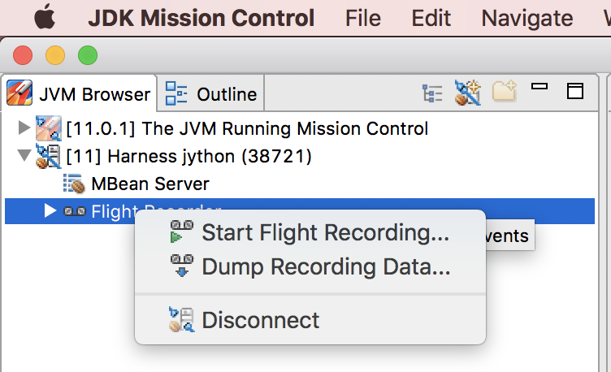
在 JMC GUI 客户端左侧的 JVM 浏览器中，我们可以看到所有正在运行的 Java 程序。当点击右键弹出菜单中的Start Flight Recording...时，JMC 便会弹出另一个窗口，用来配置 JFR 的启动参数，如下图所示：
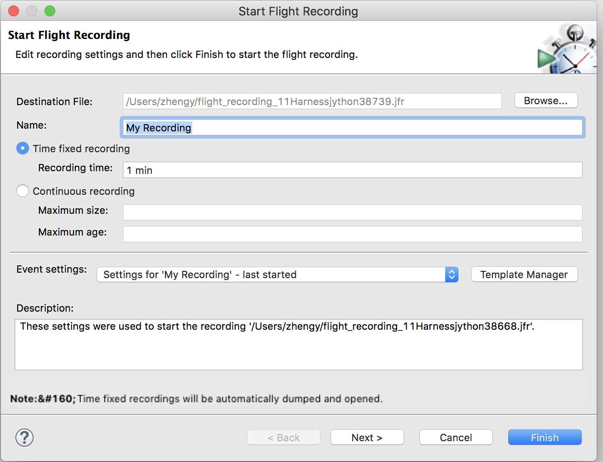
这里的配置参数与前两种启动 JFR 的方式并无二致，同样也包括标签名、收集数据的持续时间、缓存事件的时间及空间限制，以及配置所要监控事件的Event settings。
（这里对应前两种启动方式的settings=default|profile）
JMC 提供了两个选择：Continuous 和 Profiling，分别对应
$JDK/lib/jfr/里的default.jfc和profile.jfc。
我们可以通过 JMC 的Flight Recording Template Manager导入这些 jfc 文件，并在 GUI 界面上进行更改。更改完毕后，我们可以导出为新的 jfc 文件，以便在服务器端使用。
当收集完成时，JMC 会自动打开所生成的 jfr 文件，并在主界面中列举目标进程在收集数据的这段时间内的潜在问题。例如，Parallel Threads一节，便汇报了没有完整利用 CPU 资源的问题。

客户端的左边则罗列了 Java 虚拟机的各个子系统。JMC 将根据 JFR 所收集到的每个子系统的事件来进行可视化，转换成图或者表。
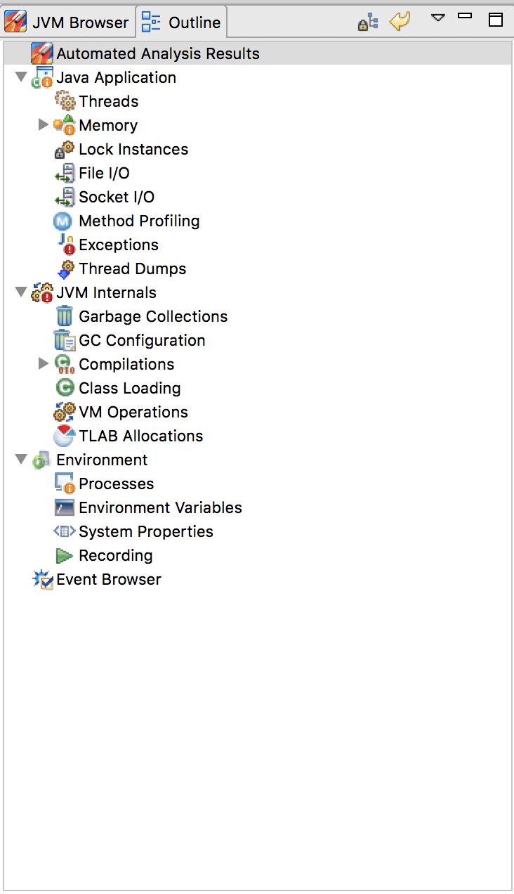
这里我简单地介绍其中两个。
垃圾回收子系统所对应的选项卡展示了 JFR 所收集到的 GC 事件，以及基于这些 GC 事件的数据生成的堆已用空间的分布图，Metaspace 大小的分布图，最长暂停以及总暂停的直方分布图。
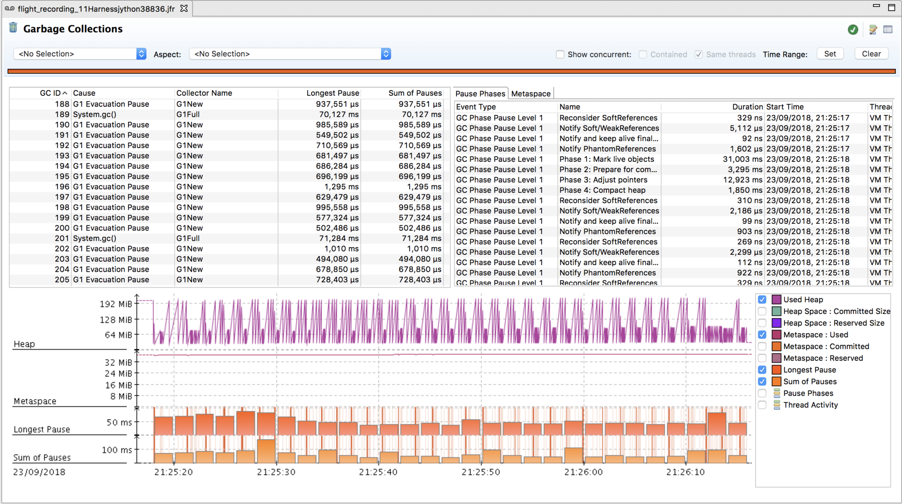
即时编译子系统所对应的选项卡则展示了方法编译时间的直方图，以及按编译时间排序的编译任务表。
后者可能出现同方法名同方法描述符的编译任务。其原因主要有两个，一是不同编译层次的即时编译，如 3 层的 C1 编译以及 4 层的 C2 编译。二是去优化后的重新编译。
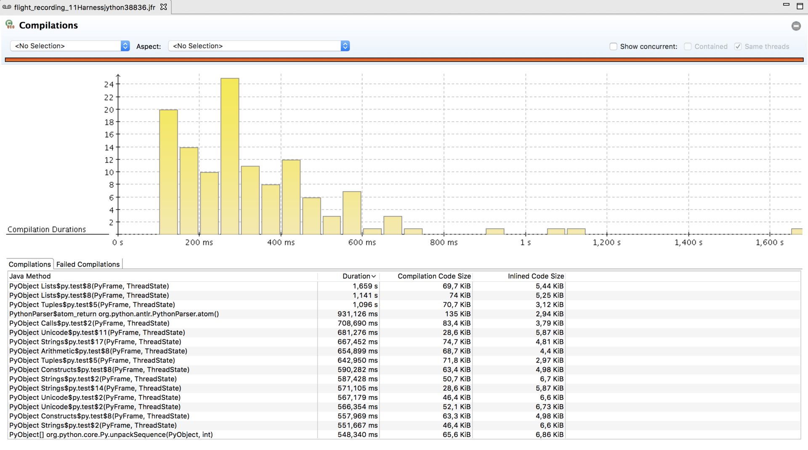
JMC 的图表总体而言都不难理解。你可以逐个探索，我在这里便不详细展开了。
总结与实践
今天我介绍了两个 GUI 工具：eclipse MAT 以及 JMC。
eclipse MAT 可用于分析由jmap命令导出的 Java 堆快照。它包括两个相对比较重要的视图，分别为直方图和支配树。直方图展示了各个类的实例数目以及这些实例的 Shallow heap 或 Retained heap 的总和。支配树则展示了快照中每个对象所直接支配的对象。
Java Mission Control 是 Java 虚拟机平台上的性能监控工具。Java Flight Recorder 是 JMC 的其中一个组件，能够以极低的性能开销收集 Java 虚拟机的性能数据。
JFR 的启用方式有三种，分别为在命令行中使用-XX:StartFlightRecording=参数，使用jcmd的JFR.*子命令，以及 JMC 的 JFR 插件。JMC 能够加载 JFR 的输出结果，并且生成各种信息丰富的图表。
今天的实践环节，请你试用 JMC 中的 MBean Server 功能，并通过 JMC 的帮助文档（Help->Java Mission Control Help），以及该教程来了解该功能的具体含义。
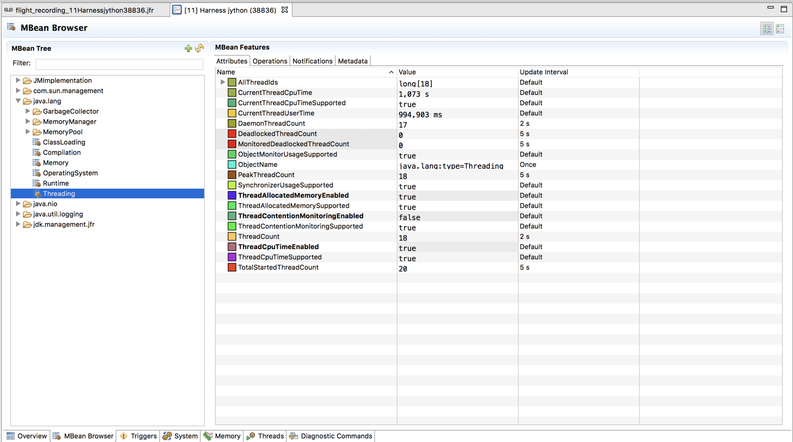